| GrAntSOFT, главная, точнее стартовая страница Зачем люди делают собственные сайты? Неизвестно. Но я тоже зачем-то хочу... ---<+++>--- Если Вы дочитали досюда, то сами виноваты. GrAntSOFT - это я, Гринблат Антон, а это - моя копилка, КОПИЛКА ЛИЧНОГО ТВОРЧЕСТВА здесь игровые (и не очень) программки, написанные мной забавы ради, немножко самопальной прозы и собранных на колене стихов | ||
| Последние обновления 15.01.2025 - Вышел Instead-ремейк игры "КосмоСпасатель Ы" 17.08.2024 - опубликована историко-автобиографическая статья обо всех версиях "Червемента" 19.06.2024 - Вышел "Червемент-3" для Instead | ||
| 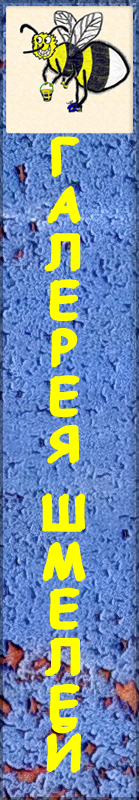 | 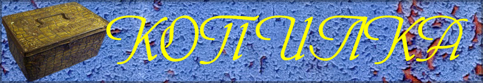 | 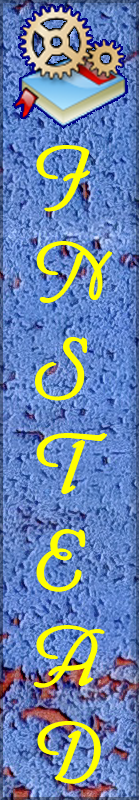 |
| 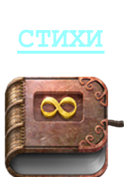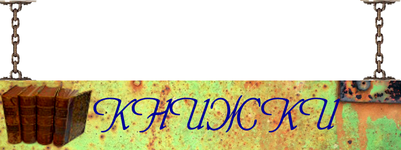 | ||
| 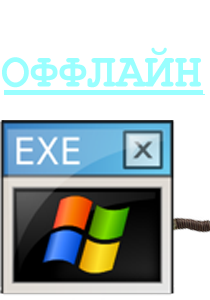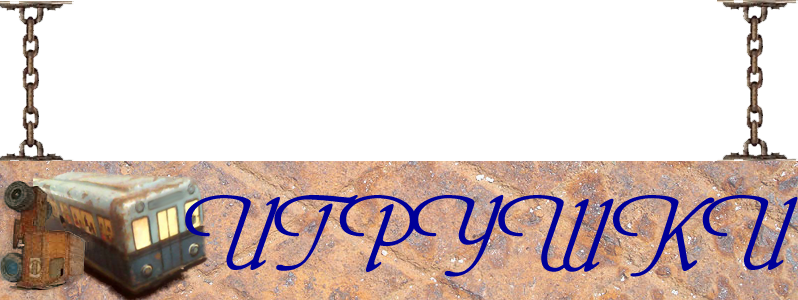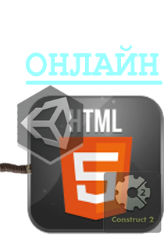 | ||
| 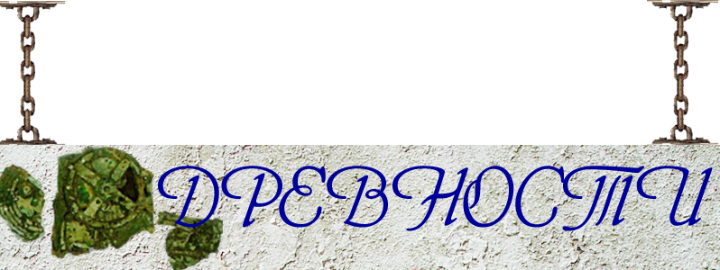 | ||
| 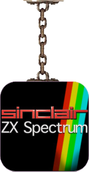 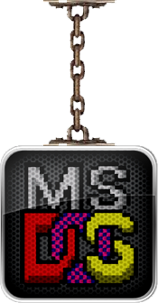 |